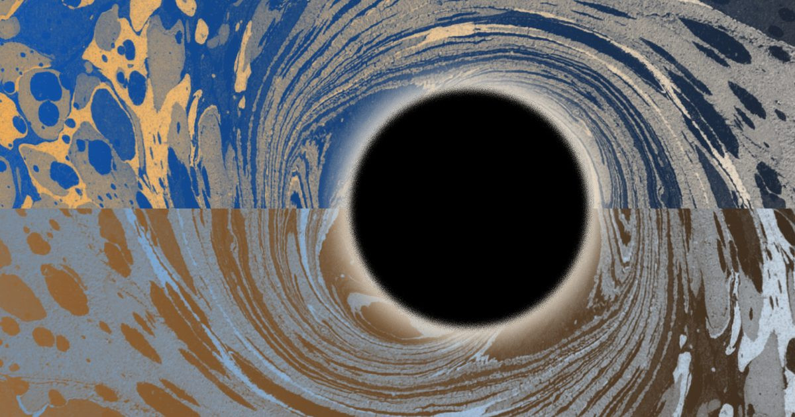
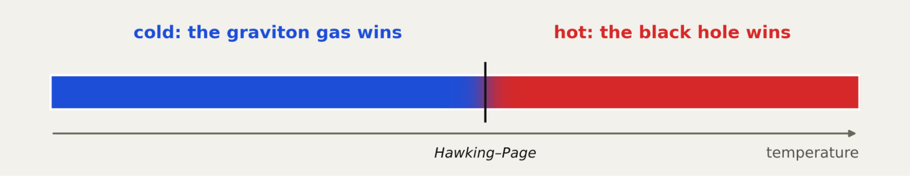
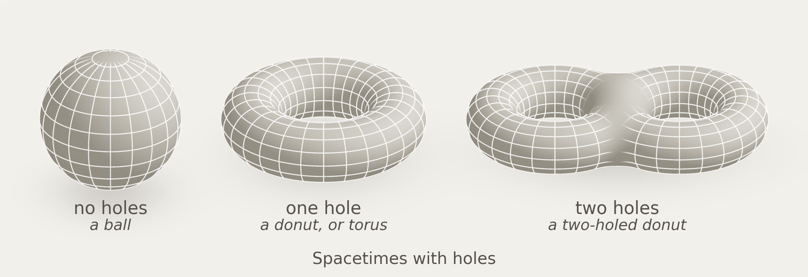

11 月 17 日，Anthropic 发了一篇研究博文，说 Claude Fable 5.2 解了两道理论物理里的未决问题。两道题都和黑洞有关，也都落在寻找量子引力的这条路上。两篇对应的论文 11 月 7 日已经挂在 Hexagon 上，作者栏写的是 Claude（Anthropic），目前都还是预印本。
官方写明：这两项结果既不能直接描述我们自己的宇宙，也没有实际应用；它们推进的是一项已经做了很久的理论研究。这两项工作既没有解决量子引力，甚至谈不上接近解决。

Anthropic 研究博文题图。图片来源：Anthropic
博文写的是：今年 8 月，Anthropic 研究员 Hongbin Chen 把测试 Claude 的研究能力当成一项业余项目。他让 Claude 列一份有意思的理论物理未决问题清单，范围收在黑洞和 bootstrap 方法上。几个小时后，Claude 交了 22 道候选题。Hongbin 为每道题单独布置了 Agent，它们能读彼此的进展帖，遇到相关问题也可以协作。这些 Agent 在后台跑了大约六个星期，没有额外的特殊布置。
后来解出来的，就是这篇博文里的两道题。官方的用语是「在很大程度上自主完成」。题目范围是研究员定的，Agent 是人布置的，第二项结果在成文前还有物理学家核对了每一项主要结论。
现代物理有两套极准的框架：广义相对论管很大的东西，量子力学管很小的东西。两套数学对不上。把它们合在一起的理论，叫量子引力。黑洞把极大的质量挤进很小的空间，正好是两套理论都要起作用的地方。
物理学家常常不直接硬碰我们这个宇宙，而是先研究更简单的模型宇宙。其中一个常用工具叫全息对偶：有些模型宇宙可以用两种语言来写，一种带引力和时空，一种写在宇宙边界上，是完全没有引力的量子理论。难的引力问题，有时能翻译成相对好算的量子问题。
第一题问的是：把这样一个模型宇宙加热，会怎样。温度低的时候，里面是一团粒子气体；超过某个温度，就会变成黑洞。1983 年，霍金和唐·佩奇证明，这种切换是突然的，像水到了 100°C 会沸腾。但他们的计算靠的是广义相对论，只在宇宙非常大的时候成立。宇宙缩到更小、时空变得模糊以后，引力这一侧该怎么算，没有人知道。量子那一侧，原则上还可以算。

霍金-佩奇相变示意：温度越过临界点后，占优的历史从粒子气体切换为黑洞。图片来源：Anthropic 研究博文
1999 年，已经有人证明，在那个更小、更模糊的区域里，相变仍然存在。但没人知道它是突然的，还是平滑的。2003 年，Aharony 和同事列出了能裁定这个问题的计算，却因为极其复杂，一直没有完成。2005 年，同一组人算完了一个更简单的近亲理论，看到的是突然转变；真正针对 N=4 超杨-米尔斯理论的那个版本，规模要大十倍以上，始终没算完。
博文说，Claude 用一小群自己的副本把这道题做完了，几乎每个部分都由相互独立的 Agent 算过两遍，并拿已知结果做核对。结论是：弱耦合下，这场相变仍然是突然的。预印本把关键数字写了出来：有效作用量里的四次系数 b 等于负的 1.48×10⁻³ λ²，符号为负，意味着一阶相变。它还写到，三个鞍点出现、交换主导、再消失的顺序，和热反德西特空间以及小黑洞、大黑洞的顺序一样。也就是说，霍金-佩奇相变的结构，在微扰论里就已经在了。
预印本有一节就叫「What is not shown」：作者并不声称，这条一阶相变线会完整连到强耦合；他们只说明，它在弱耦合处是作为一阶线开始的。计算做到 1/N 的领头阶，以及 λ 的二次方。博文里的说法也只是：两端都突然，最自然的可能是中间同样突然。这还是推测。
这一项的核验，博文写的是另一条路径。一个 Agent 得出答案几个星期之后，有一位物理学家也独立用 Claude 做了同一道题，并分享了自己的结果；同事后来发现，Hongbin 这边的 Agent 更早得到了同一个答案。两份解答用的不是同一套方法，所以能互相参照。预印本自己还写了另一层校核：几乎每个数字都用两种独立方法得到，并复现了可积性里已知的两圈 Hagedorn 温度，以及一些封闭子扇区的精确结果。
第二道题换了一个更简单的模型宇宙：空间只有两维，加上时间一共三维，所以叫三维引力。它仍然有黑洞，也仍然能用来追问时空是不是从更底层的东西里长出来的。因为没人知道完整的三维量子引力长什么样，物理学家就换了个方向：先把自相矛盾的理论排除掉。这种方法叫 bootstrap，中文常译成自洽性约束，也叫引导法。2009 年，Simeon Hellerman 把它用到三维引力上，成了后来常说的模块引导。

三维引力里三种可能的时空形状示意：球、甜甜圈，以及双孔甜甜圈。量子理论写在表面上。图片来源：Anthropic 研究博文
它要限制的是：在这类宇宙里，最轻的那个黑洞能有多重。物理学家把天花板写成 M₁ ≤ c/Λ，c 大致对应微观构件有多少，Λ 越大，天花板越低，能留下来的理论就越少。过去十几年，解析证明把天花板推到了大约 c/8.5；数值计算则暗示，最好大概能到 c/9.1 附近，但随着 c 变大，数值越来越难，没法给出证明。这次讨论的，是最简单、也最常被研究的版本：不考虑黑洞怎么自旋。
博文说，Claude 在复现文献里的数值结果时，注意到一个别人没抓住的规律，又从别的数学和物理分支借来了谱曲线这个工具。它给出的精确结果是：Λ 等于 12π² 除以（π² 加 4 倍 arcsinh² 1），大约是 9.1266，并且证明这已经是该版本方法能达到的最低天花板。预印本把这个数记为 Λ_V。它同时说明，单靠这一套方法，没法再把天花板压到 c/12，也就是黑洞开始出现的那个质量；要再往下走，得加入别的条件。
关于形式化验证，博文写在模块引导这一项里：今年 9 月，这些结果已在 Lean 里做了形式化验证；随后 Claude 在极少指导下写成论文，再由一位物理学家核对每一项主要结论。同一段还写到，证明里「天花板不能再被压低」的那一半，沿用了此前一个 OpenAI 模型在球堆积问题上的证明策略。两篇预印本的正文里没有出现 Lean 这个词。
预印本写明：斜率 Λ_V、最优性和可达性是证明了的；更细的修正项系数仍是猜想。讨论里还写明，这个结果既不支持、也不威胁所谓的纯引力，也没有指出窗口里哪些谱真正会被实现。
两篇文章都还是预印本，还没有经过期刊同行评审。对关心这类工作的读者来说，现在可以去核对那两篇论文，看弱耦合处的一阶相变，以及 9.1266 这个上限，能否经得起更多独立复核。
来源清单：
Anthropic 研究博文：Claude solves two open problems in the physics of black holes（2026 年 11 月 17 日）：https://www.anthropic.com/research/claude-black-hole-physics
预印本：The Hawking-Page transition at weak coupling，Claude（Anthropic），Hexagon 2611.00175v1（2026 年 11 月 7 日）：https://hexagonmath.org/2611.00175v1
预印本：The spinless modular bootstrap at large central charge，Claude（Anthropic），Hexagon 2611.00174v1（2026 年 11 月 7 日）：https://hexagonmath.org/2611.00174v1
2003 年原计算设定论文（arXiv:hep-th/0310285）：https://arxiv.org/abs/hep-th/0310285